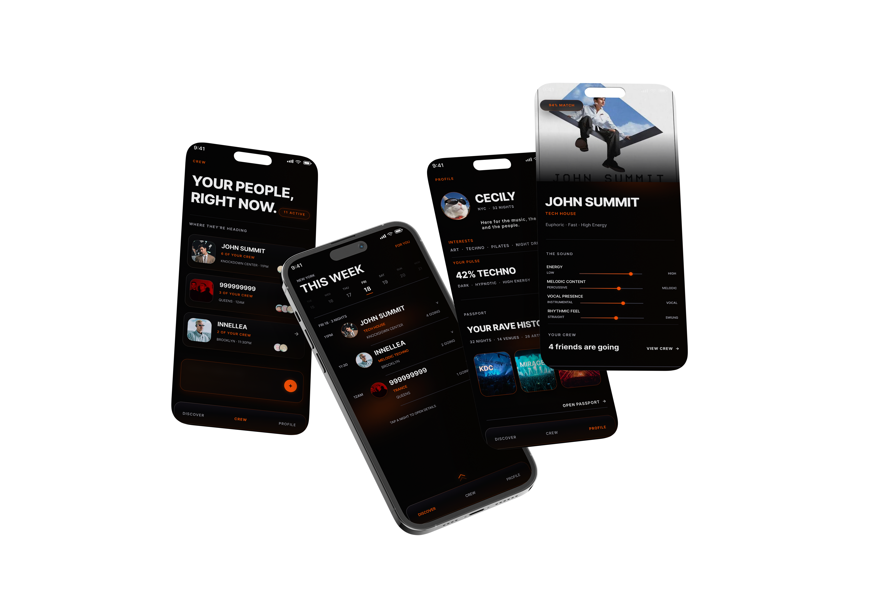

Independent Product Design
PULSE

Find your rave.
PULSE is a nightlife discovery app designed to help ravers understand unfamiliar DJs, find events that match their music taste, and see where their friends are going before committing to a night out.
01 / The Problem
Finding events is easy.
Choosing one isn’t.
Event listings provide basic information, but not enough context to judge whether an event is personally relevant.
Unfamiliar DJs make it difficult for users to understand what an event will actually sound and feel like.
Music taste, event vibe, and friend activity are spread across different platforms.
Users must piece together this information manually before deciding where to go.
The result is a fragmented and high-friction decision process.
“I don’t know this DJ.”
A lineup can include dozens of artists, but recognizing a name and understanding their sound are two different things.
Users often leave the event app and search Spotify, SoundCloud, Instagram or YouTube before deciding.
“Where is everyone going?”
Rave communities are often large and loosely connected. Friends may split across several events on the same night, making it difficult to know where everyone is heading.
“We keep talking, but no one decides.”
Group chats repeatedly cycle through the same questions: Who is this DJ? What do they play? Who’s going? Which event are we choosing?
The problem wasn’t a lack of events.
It was the uncertainty between discovering an event and actually deciding to go.02 / Research & Insight
How people actually plan a rave night
The initial problem came from my own experience navigating nightlife in New York.
Finding events was rarely difficult. The friction appeared after discovery: comparing unfamiliar artists, checking their sound, figuring out the vibe, and asking where friends were going.
I also looked at how people in my own rave circle planned nights out and noticed the same tools appearing repeatedly across the decision process.
- DiscoverBrowse event platforms to see what is happening and build an initial shortlist.
- ResearchOpen Spotify or SoundCloud to hear unfamiliar artists and compare their sound.
- Vibe CheckUse Instagram and artist content to understand the visual tone, crowd energy, and atmosphere.
- Social CheckCheck group chats and DMs to learn where friends are going and coordinate plans.
- DecideCombine sound, vibe, and social context to choose the event that feels right.
Key Insight
The problem wasn’t event discovery.
It was fragmented decision-making.
Sound > Labels
Users may not always understand genre terminology, but they usually know what they like when they hear it.
Taste Is Emotional
People often describe music through feelings such as dark, groovy, hypnotic or euphoric rather than strict genre labels.
Social Context Matters
An event becomes more relevant when users know that people they care about are already planning to attend.
The most important shift in this project was realizing that nightlife discovery was not really a search problem.
People already had ways to find events.
The opportunity was helping them move from:
“This event exists.”to“This feels right for me, my friends are going, and I’m ready to choose it.”03 / Design Opportunity
From discovery
to confidence.
How might we help ravers quickly understand unfamiliar artists and confidently choose events that match their taste?
And how might we make deciding where to go with friends easier?
Discover
See what is happening without getting lost in an endless event feed.
Understand
Quickly understand an unfamiliar artist through sound, vibe and context.
Decide
Bring personal taste and friend activity into the moment of decision.
04 / Product Strategy
From event discovery
to decision support.
PULSE is not designed to surface more events. The strategy is to reduce the uncertainty between finding an event and feeling confident enough to choose it.
The product focuses on four decision signals: personal taste, relevance, sound, and social context.
01 / Personalization
Your Pulse
Build preference from behavior, not self-reported labels.
Instead of asking users to define their taste through a long genre questionnaire, PULSE learns from short audio reactions, vibe selections, saves, skips, and past activity.
Strategic role
Create a taste model that becomes more useful over time while keeping onboarding lightweight.
Design implication
Ask users to react to music before asking them to describe it.
02 / Relevance
Match Score
Translate taste data into an immediately understandable signal.
A recommendation system has little value if the user cannot understand how it affects their choices. Match Score brings personalization directly into the event list.
Strategic role
Reduce the effort required to compare unfamiliar events.
Design implication
Surface relevance at the point of discovery rather than hiding it inside a recommendation engine.
03 / Understanding
Music Preview
Make the most important evidence available at the moment of evaluation.
For unfamiliar artists, genre labels and descriptions are often not enough. A short audio preview gives users a faster way to understand what an event may actually feel like.
Strategic role
Reduce dependency on external platforms during the decision journey.
Design implication
Keep listening inside the browsing flow instead of forcing users to switch apps.
04 / Social Context
Crew
Use friend activity as decision context, not as a social feed.
Knowing that friends are already considering an event can meaningfully change its relevance. PULSE surfaces this information only when it supports a decision.
Strategic role
Turn fragmented group-chat coordination into lightweight planning context.
Design implication
Show social information beside the event, not in a separate social network experience.
05 / User Flow
One continuous path
from taste to decision.
Rather than separating discovery, music research and social planning into different experiences, I designed PULSE around one continuous decision journey.
.png)
06 / Lo-Fi Design
Early Product Direction
Structure before visuals.
Before defining the visual language, I focused on the decision flow: how much information should appear at each step, when users need more context, and how to reduce unnecessary navigation.


07 / Hi-Fi Design
Final Interface
From structure
to experience.
Once the product structure was defined, I developed a visual and interaction system built around nightlife, sound and decision-making.
The final interface uses a near-black environment with orange reserved for active, selected and high-confidence states.
01 / Learn
Teach PULSE your taste.
Onboarding begins with listening rather than filling out a preference form. Short music samples and vibe choices gradually create Your Pulse.


02 / Discover
Find the right night.
Discover keeps browsing lightweight while giving users more context only when an event starts to feel relevant.


03 / Decide
Know where your people are going.
Taste helps narrow the options. Social context helps turn consideration into a decision.

04 / Remember
Turn nights out into a history.
Profile and Passport turn previous events, venues and artists into part of the user’s evolving nightlife identity.


Design Decisions
Three choices that shaped the product.
Taste should be felt,
not filled out.
A traditional onboarding flow could ask users to select genres from a checklist. Instead, I designed onboarding around short audio samples and simple reactions.
Users may not know how to label their taste, but they usually know what they like when they hear it.
Exploration moves.
Preference settles.
Genre alone cannot describe the emotional quality of a night. Unselected vibe preferences gently move while selected preferences become visually stable and gain an orange edge glow.
Motion communicates state rather than simply decorating the interface.
Social context
at the moment it matters.
PULSE is not designed as another social feed.
Friend activity appears beside the events users are already considering, helping reduce uncertainty without shifting the focus away from the event.